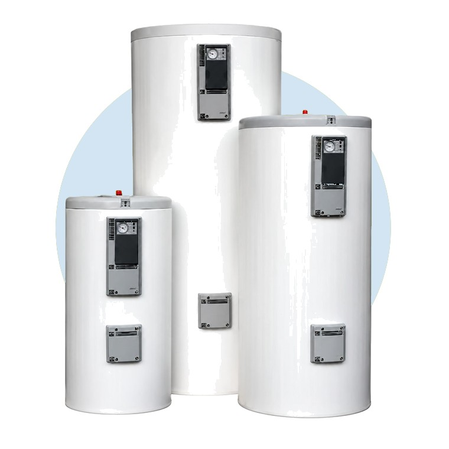
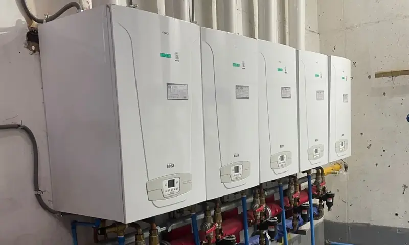

Qué es y cómo funciona
Un calefón calienta el agua en el momento en que abres la llave, sin estanque. Por eso entrega agua caliente continua mientras haya consumo. Funciona normalmente a gas y es una de las soluciones más usadas para el agua caliente en casas y cabañas.
Los calefones de tiro natural evacúan los gases por sí solos y deben ir en un lugar bien ventilado, por ejemplo al exterior. Los de tiro forzado usan un ventilador para expulsar los gases y pueden instalarse en recintos más reducidos.
El tamaño se elige según los litros por minuto que necesitas y cuántos puntos de agua caliente se usarán a la vez: ducha, cocina, tina.
Ventajas
- Agua caliente continua, sin depender de un estanque
- Equipo compacto que ocupa poco espacio
- Solo calienta cuando abres la llave
- Instalación más simple que la de un sistema central
- Modelos para exterior o para interior, según el tipo de tiro
- Capacidad a elección según el consumo de tu hogar o negocio
Otras opciones de agua caliente
Si en tu casa, cabaña o negocio se usa mucha agua caliente a la vez, un calefón puede quedar corto. Te ayudamos a elegir la mejor solución.


Qué hacemos
Atendemos calefones en Panguipulli y en toda la Región de Los Ríos.
- InstalaciónElección de capacidad, ubicación ventilada, conexión de agua y gas, ducto de evacuación y pruebas.
- MantenciónLimpieza del quemador y del intercambiador, revisión de sensores, seguridades, caudal y presión.
- ReparaciónFalta de agua caliente, problemas de encendido, goteos y caudal bajo.
Cuándo conviene llamarnos
- El agua sale tibia o cambia de temperatura
- El calefón no enciende o se apaga solo
- Llama amarilla o restos de hollín
- El caudal de agua caliente es bajo
- Goteos o humedad bajo el equipo
- Ruidos extraños al encender
Mantención recomendada
Revisarlo al menos una vez al año ayuda a que funcione de forma segura y a que dure más. Si lo usas mucho o el agua de tu zona deja sarro, conviene revisarlo con más frecuencia.
Preguntas frecuentes
¿Tiro natural o tiro forzado?
¿Puedo instalar el calefón dentro del baño?
¿Por qué mi calefón da agua tibia?
¿Cada cuánto conviene hacer mantención?
¿Necesitas instalar o revisar tu calefón?
Cuéntanos qué necesitas y coordinamos tu visita y tu presupuesto.